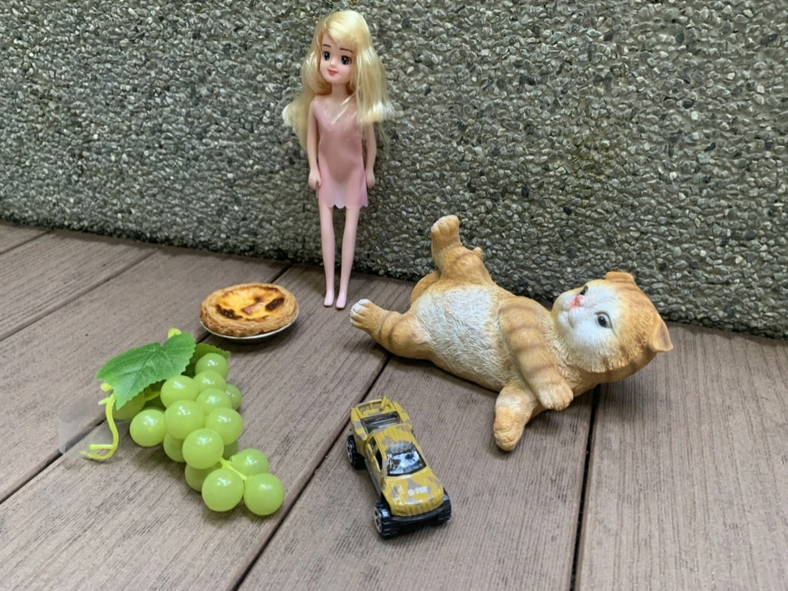
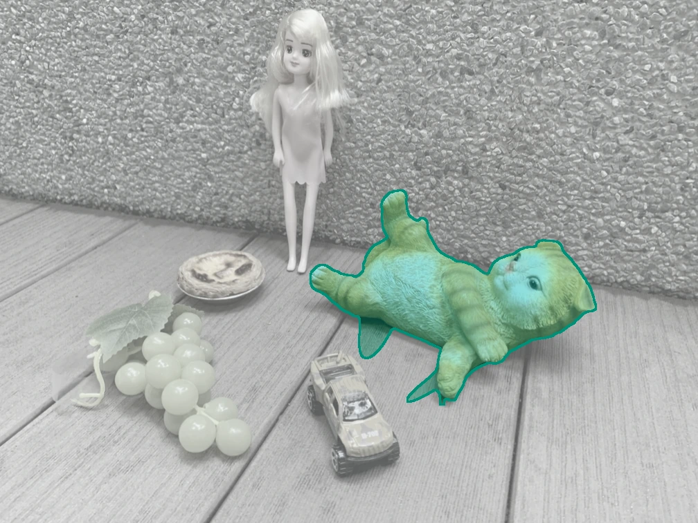
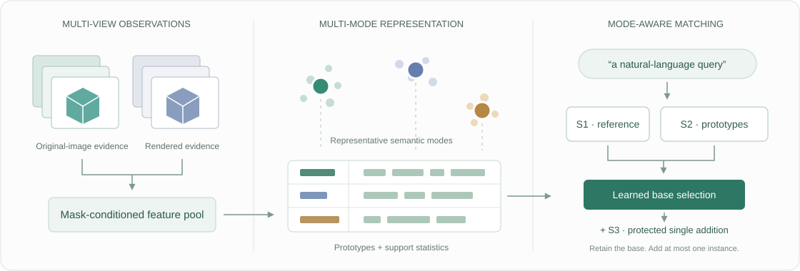

Collect observations
Pool mask-conditioned features across views, using original-image evidence and rendered-instance evidence.
NeurIPS 2026
1National Key Laboratory of Maritime Unmanned Swarm Intelligence, Shanghai University
2Shanghai University3Tsinghua University
* Corresponding author
An object has many views.
Its meaning deserves more than one feature.
Language → instances
Choose a query. Drag to compare.


Original viewSelected instancesThe idea
Open-vocabulary 3D scene understanding identifies reconstructed objects from natural-language queries. Yet the appearance of an object changes with viewpoint, occlusion and image context. Compressing every observation into a single descriptor can hide the evidence needed to recognize it.
MSR-3D retains multiple semantic modes for each instance. Representative features capture complementary observations, while prototype-level and instance-level statistics describe their support and consistency. A lightweight learned matcher combines this evidence to select the instances that correspond to a query.
How it works
A compact semantic representation, built on reconstructed and segmented 3D Gaussian scenes.

Pool mask-conditioned features across views, using original-image evidence and rendered-instance evidence.
Keep representative prototypes with their support statistics, alongside an instance reference feature.
Combine reference and prototype scores into a base selection. An attention-based S3 branch can add at most one instance while retaining the base.
Quantitative evaluation
Three target scenes · 45 exact-string-unseen queries
| Method | mIoU ↑ | mAcc ↑ | mF1 ↑ |
|---|---|---|---|
| OpenSplat3D | 59.69 | 76.20 | 65.68 |
| Segment-then-Splat † | 56.29 | 71.75 | 66.19 |
| MSR-3D Ours | 63.15 | 83.21 | 72.83 |
Metrics (%) average queries within each scene, then weight scenes equally. mF1 measures instance-set retrieval. Comparisons use shared upstream instances and adapted matching rules. † Single-instance selection.
LERF67 includes the supervised Waldo Kitchen scene. LERF45 contains strings absent from the 18 source queries; 3DOVS uses ten scenes and 61 scene/query pairs. Target benchmarks were examined during development. These results use code v1.2.0 and data v1.1.0; the 3DOVS geometric middle-crop configuration was evaluated on the target benchmark. The S3 branch has not shown a consistent benefit across target scenes.
Build on MSR-3D
Start from preprocessed scenes, or use the supplied observation pools and representations.
@inproceedings{fu2026msr3d,
title = {{MSR-3D}: Multi-Mode Semantic Representation for
Open-Vocabulary 3D Scene Understanding},
author = {Jianan Fu and Ting Wu and Rui Yang and Jiacheng Sun and
Xinghong Zhou and Chenghai Mao and Pan Jiaxiang and Xiaomao Li},
booktitle = {Advances in Neural Information Processing Systems},
year = {2026}
}